Oasis Natural
An app that doesn't just sell gardening supplies: it also teaches plant care and brings together a community that loves plants.
Role
UX/UI design and branding
Type
Academic project reviewed by faculty
Duration
5 weeks
Team
4 people · we all took part in every stage
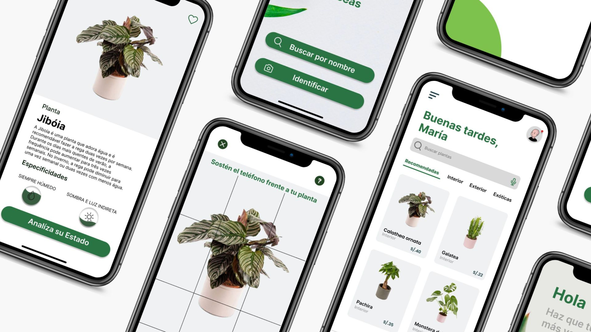
(01) Problem
The starting point
Lack of knowledge, difficulty identifying plants and the absence of a community make gardening a challenge. Beginners don't know how to care for their plants or where to find reliable information.
Design question
How might we make gardening more accessible, educational and connected in a single platform?
(02) Benchmark and user
Market analysis
Interest in gardening has grown, but current solutions are limited: there are apps to identify plants, gardening forums and marketplaces, but no platform brings it all together.
Empathy map
Our user loves plants but lacks knowledge, struggles to find reliable information and has trouble buying products. They feel motivated seeing their plants grow and frustrated when they don't know how to care for them.
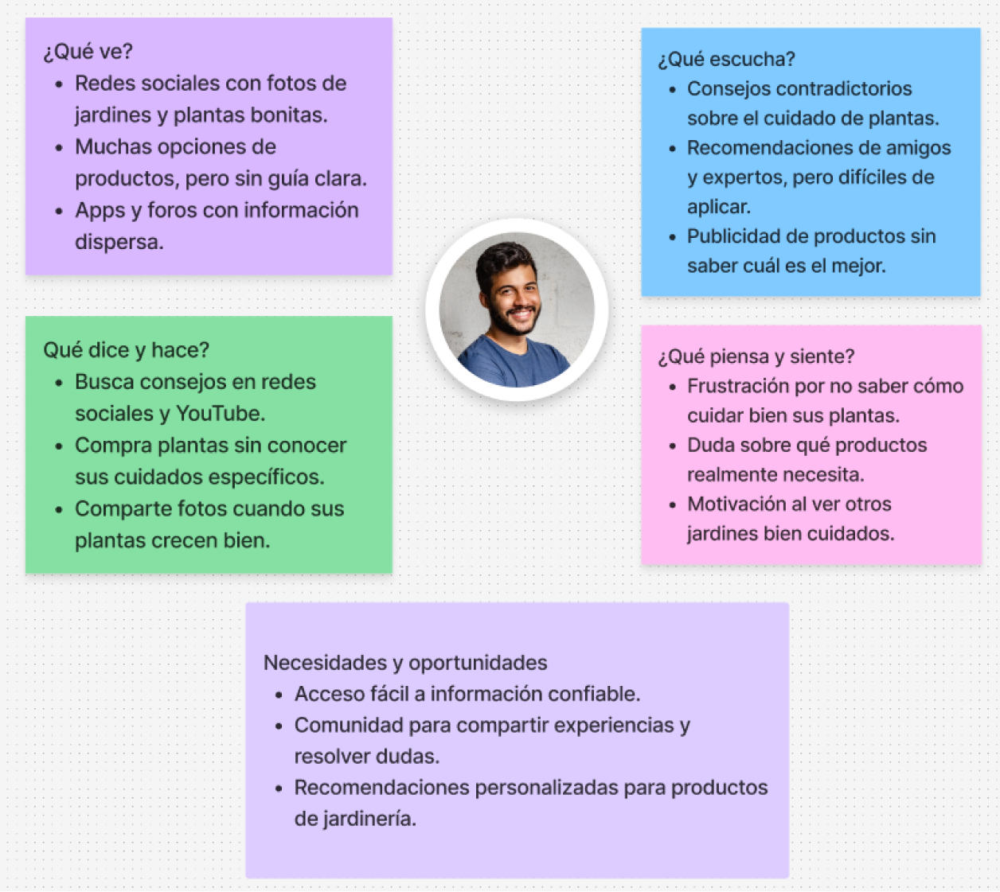
(03) Definition
AI, community and marketplace in one app
Oasis Natural lets people learn, share and find products in one place.
01
Plant-recognition camera
Point at a plant and the app identifies it.
02
AI chatbot
Answers care questions on the spot.
03
Built-in marketplace
Supplies to care for and preserve every plant.
04
Adoption game
Adopting a plant turns learning into a game.
05
Personal avatar
Every user has their own identity in the community.
06
Rewards system
Rewards progress and consistent care.
(04) Sitemap and wireframes
From structure to flow
The sitemap organized features into clear sections; the wireframes defined the journey before moving on to visual design.
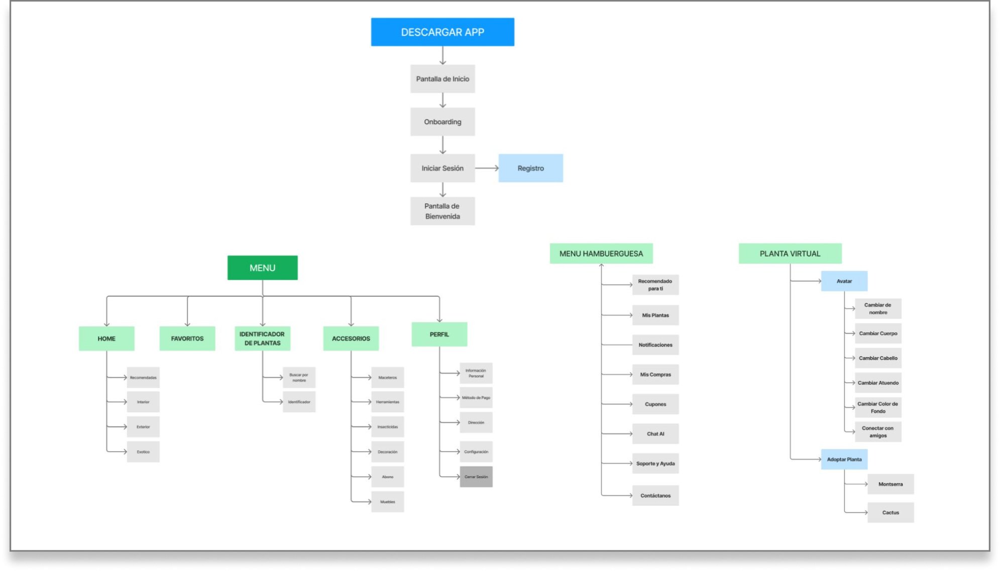
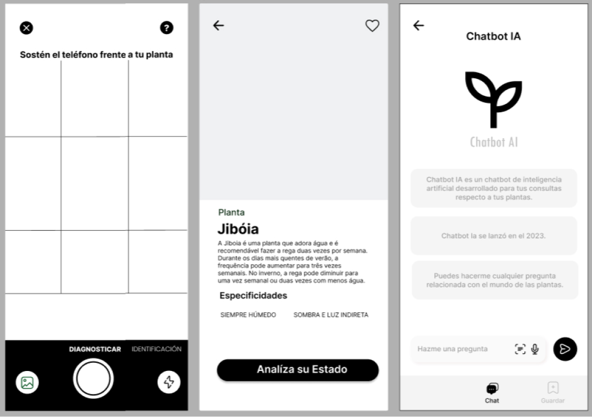
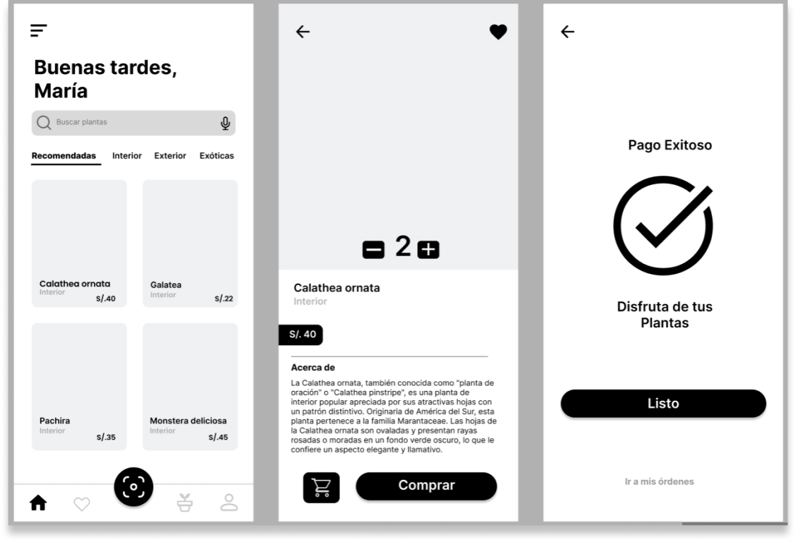
(05) Added value
01
Care guides
A guide for every plant.
02
Supplies
Products for care and preservation.
03
Beginner tips
Watering and lighting for each plant.
04
Community
A space to share tips and experiences.
(06) Branding
Freshness and harmony
The branding conveys a connection with nature. Its palette of greens reflects the balance between vitality and sustainability, for a friendly, organic experience.
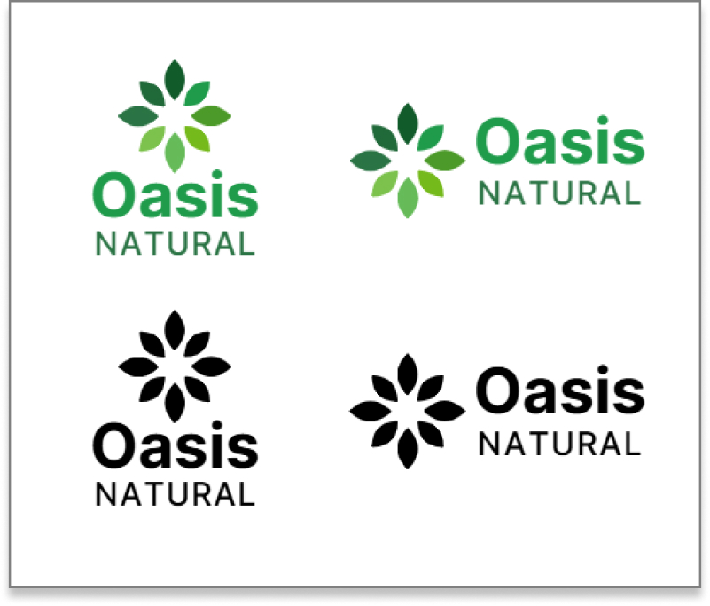
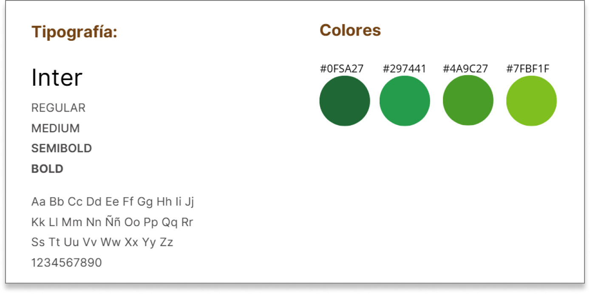
(07) UI design
A fresh, clear interface
We prioritized clear navigation, accessible elements and an aesthetic in harmony with the brand identity.
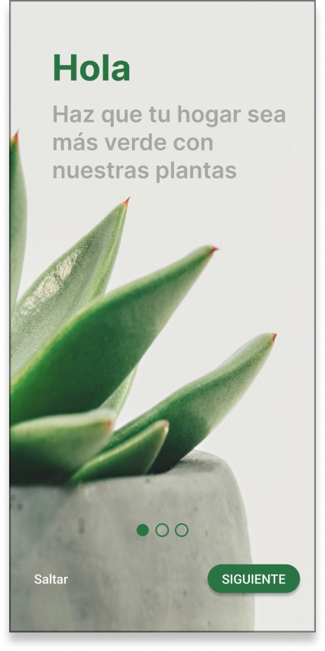
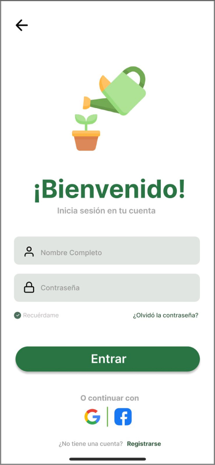
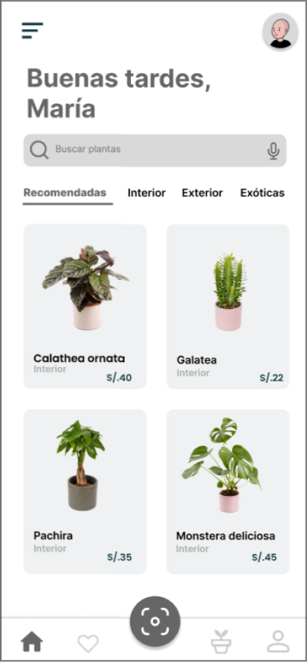
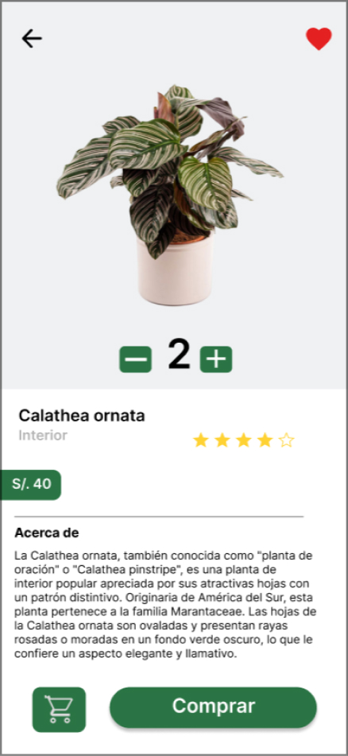
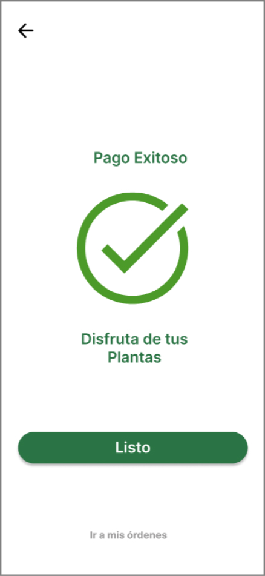
(08) Prototype
A clickable prototype to explore the AI, the community and the marketplace.
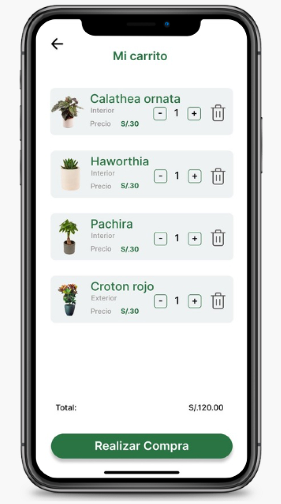
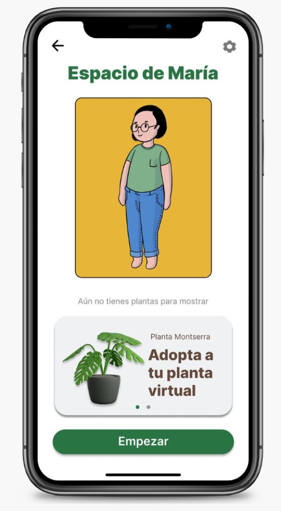
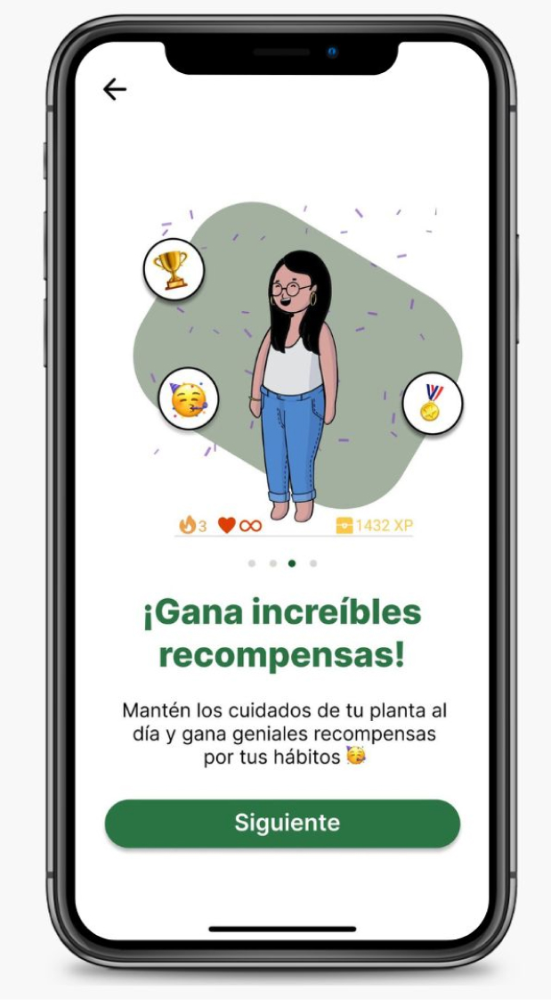
Next project
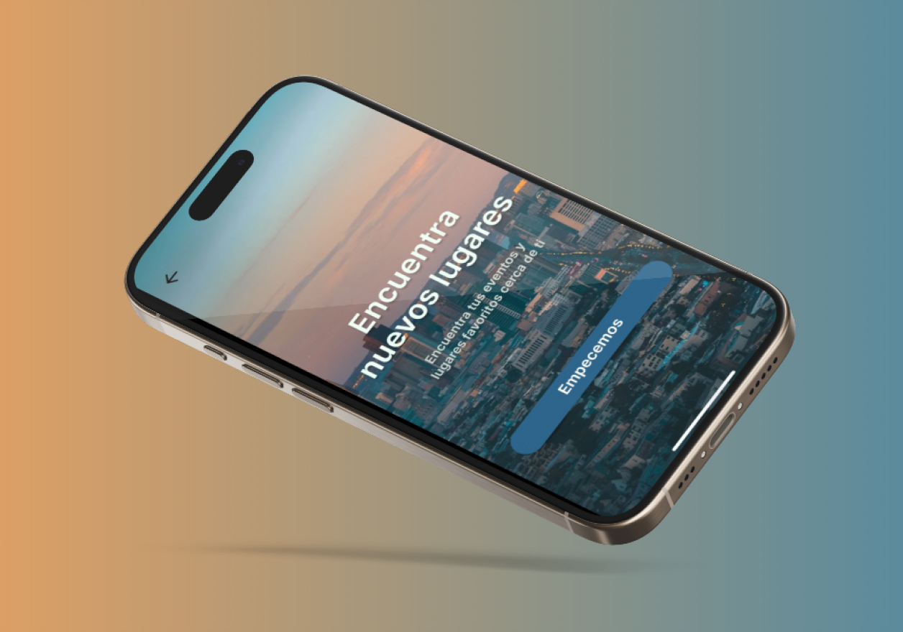